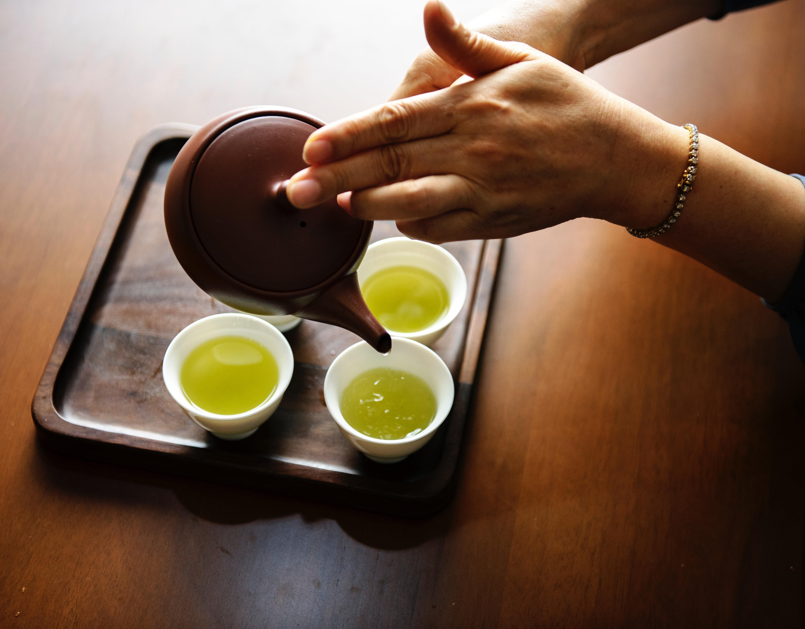
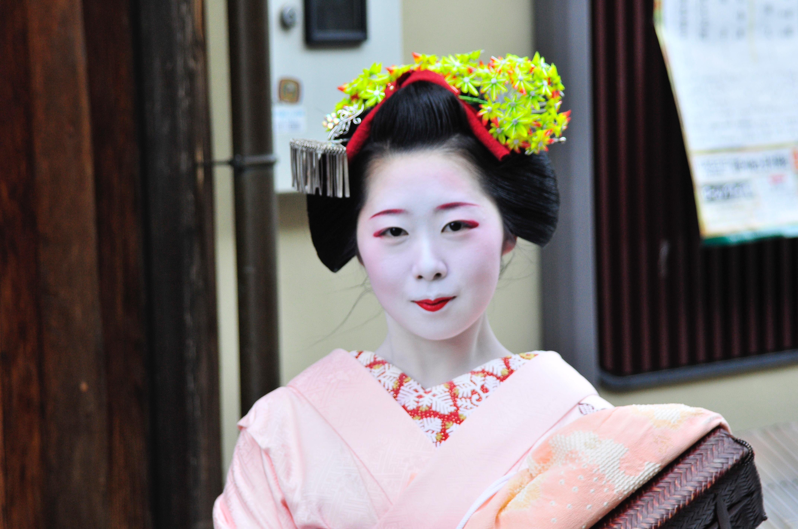

DISCOVER JAPAN
On the surface, Japan appears exceedingly modern, but travelling around it offers numerous opportunities to connect with the country's traditional culture. Spend the night in a ryokan (traditional Japanese inn), sleeping on futons and tatami mats, and padding through well-worn wooden halls to the bathhouse (or go one step further and sleep in an old farmhouse). Chant with monks or learn how to whisk bitter matcha (powdered green tea) into a froth. From the splendour of a Kyoto geisha dance to the spare beauty of a Zen rock garden, Japan has the power to enthral even the most jaded traveller.
Wherever you are in Japan, it seems, you're never more than 500m from a great meal. Restaurants often specialise in just one dish – perhaps having spent generations perfecting it – and pay close attention to every stage, from sourcing the freshest, local ingredients to assembling the dish attractively. Moreover, you don't have to travel far to discover that Japanese cuisine is deeply varied. The hearty hotpots of the mountains are, for example, dramatically different from the delicate sushi for which the coast is famous. It's also intensely seasonal, meaning you can visit again at a different time of year and experience totally new tastes.
Sourced from: Lonely Planet/Japan.
HISTORY
Japan likely was settled about 35,000 years ago by Paleolithic people from the Asian mainland. At the end of the last Ice Age, about 10,000 years ago, a culture called the Jomon developed. Jomon hunter-gatherers fashioned fur clothing, wooden houses, and elaborate clay vessels. According to DNA analysis, the Ainu people may be descendants of the Jomon. The second wave of settlement, around 400 B.C., by the Yayoi people, introduced metal-working, rice cultivation, and weaving to Japan. DNA evidence suggests that these settlers came from Korea.
The first era of recorded history in Japan is the Kofun (250-538 A.D.), characterized by large burial mounds or tumuli. The Kofun were headed by a class of aristocratic warlords; they adopted many Chinese customs and innovations. Buddhism came to Japan during the Asuka Period, 538-710, as did the Chinese writing system. Society was divided into clans, ruled from Yamato Province. The first strong central government developed in Nara (710-794); the aristocratic class practiced Buddhism and Chinese calligraphy, while agricultural villagers followed Shintoism.
Japan's unique culture developed rapidly in the Heian era, 794-1185. The imperial court turned out enduring art, poetry, and prose. The samurai warrior class developed at this time, as well. Samurai lords, called "shogun," took over governmental power in 1185, and ruled Japan in the name of the emperor until 1868. The Kamakura Shogunate (1185-1333) ruled much of Japan from Kyoto. Aided by two miraculous typhoons, the Kamakura repelled attacks by Mongol armadas in 1274 and 1281.In 1868, a new constitutional monarchy was established, headed by the Meiji Emperor. The power of the shoguns was broken. After the Meiji Emperor's death, his son became the Taisho Emperor (r. 1912-1926). His chronic illnesses allowed the Diet of Japan to democratize the country further. Japan formalized its rule over Korea and seized northern China during World War I. The Showa Emperor, Hirohito, (r. 1926-1989) oversaw Japan's aggressive expansion during World War II, its surrender, and its rebirth as a modern, industrialized nation.
Sourced from: Thoughtco.com/Japanfacts -- Szczepanski, Kallie. "Japan | Facts and History." ThoughtCo, Jun. 13, 2017, thoughtco.com/japan-facts-and-history-195581.
